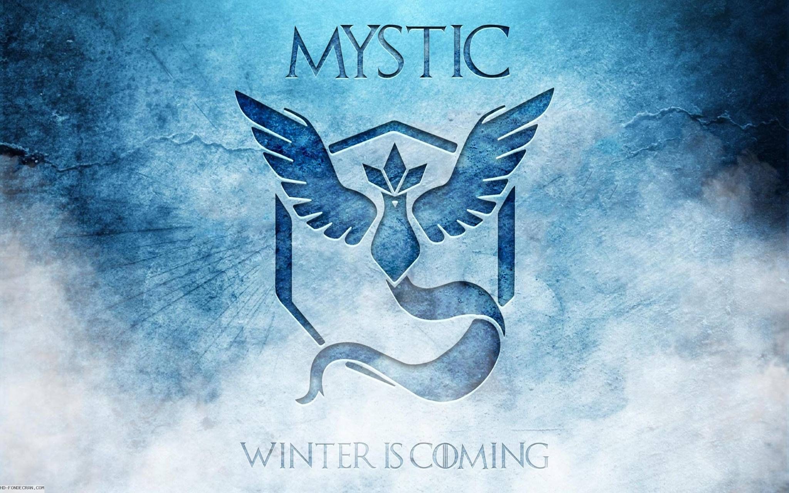

Tu es quelqu'un de courageux avec un côté aventurier. Ton fiers espris combattant te pousse a tout bruler. tu est chaud bouillant et tu veux faire les choses a votre sauce. Et pour cela tu n'hesite pas a montrer tes opinions par la force et la conviction.
En conclusion, tu deviendriez surement plus tard un futur pyromane près a tout brulez. Rendez vous immédiatement au commissariat le plus proche pour effectuer une quarantaine afin de vous vider completement de toute pensé pyromane
Tu est la sagesse incarnée. Tu aime manipulé les autres. Tu est quelqu'un de terriblement opportuniste. Tu n'hesiterai pas a trahir un camarade pour pouvoir atteindre tes fins.
En conclusion le gouvernement n'acceptera pas un tel comportement deloyal envers son entourage. Vous serez alors emprisonné pour pouvoir reviser vos fautes et les raisons pour laquel, il faut toujours etre honnête avec les autres. Si vous n'aviez pas joué a pokemon go, vous seriez resté doux comme un agneau
Tu t'appelle Julien Jaune, a l'ecole tout le monde avait une calculatrice casio et toi tu avait une texas instrument. Tu adore aller sur dailymotion pour voir tes vidéastes preféré. Tu n'est pas différent, Tu est jaune.
En conclusion tu n'est pas un danger reel pour le gouvernement, tu seras juste différents mais original. Tu te feras exploité par les autres, denigré, voir meme maltraités. Il n'est absolument pas conseillé de suivre cette voie et de choisir une voie plus sur qui te permettra de devenir meilleurs